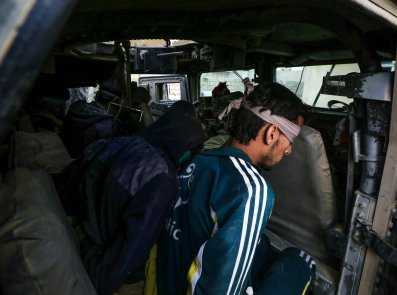
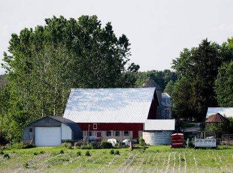

FEATURED STORIES
NEWS
"In my view, fossil fuel firms were morally and legally obliged to warn that continued use of carbon fuels
threatens our health and welfare, and to accelerate the conversation on how to reduce the threat," the
co-director of the Climate Accountability Institute wrote.
NEWS
Allowing Turkey to act against the Kurdish-led SDF in northeastern Syria "will severely damage American
credibility," retired General Joseph Votel said.
NEWS
Rainè Riggs came down with a mysterious illness three weeks ago that had the hospitals "stumped."
 SURVEY
SURVEY
Where should customers go for the best products, prices and service? We ranked the top 1,000 shops across
eight industries and 39 categories.
SPONSORED
INSIGHT
Do you dream of changing the world? Do you want to make a practical difference in people’s lives? Engineers
do both these things. Find out how to join them.
 SPONSORED INSIGHT
SPONSORED INSIGHT
There can be family related, culturally linked, and even political reasons why prospective parents face
significant challenges seeking conception treatment. Who can they turn to?
MORE STORIES
Russia and Iran have both said that the only solution for Turkey's border worries were negotiations between
Kurds and the Syrian government in Damascus.

Planned Parenthood said its first priority in the 2020 election cycle is to make sure President Donald
Trump
is not re-elected.
The Tax Cuts and Jobs Act sharpened the decline in a tax rate paid by America's 400 wealthiest families, a
new analysis shows.
Brooke Nevils is the former NBC News employee whose complaint about Lauer led to the anchor's firing from
the
"Today" show in 2017, Farrow's forthcoming book "Catch and Kill" has revealed.
Widespread electricity shutoffs are taking place across the state as strong winds cause potential hazards.
Nearly 700 have been arrested in protests in the Ecuadorian capital as President Lenin Moreno tries to
quell
the violence.
Daniel Ellsberg said it was "not too late" for other people on the now-infamous Trump-Ukraine phone call to
become whistleblowers.
Following an earlier plan to resume flights December 3, American Airlines now plans to resume flying its
Boeing 737 MAX planes January 16, 2020, assuming all goes well when Boeing submits its final certification
package to the FAA later this year

EDITOR'S PICK
U.S.
Border enforcement actions dropped by nearly 65 percent in September, Mark Morgan, the acting commissioner
of
the U.S. Customs and Border Protection agency announced Tuesday.
NEWS
Some 2,500 ISIS foreign fighters remain in Kurdish prisons in northeastern Syria, but the Turkish operation
may threaten the security of such facilities.
 U.S.
U.S.
"There have to be consequences for violation of my order sixteen thousand times," U.S. Magistrate Judge
Sallie Kim said at a hearing on Monday.
 U.S.
U.S.
Filmmakers Patricia Marcoccia and Maziar Ghaderi told Newsweek they hoped people would start talking about
the film—not about the fact that it was canceled.
U.S.
The historian related Attorney General William Barr to former Attorney General John Mitchell, who left the
Justice Department to work on Nixon's re-election campaign.
U.S.
Darin Von Ruden said it could take up to 20 years for the farmers he represents to recover from low prices
and President Donald Trump's trade wars.
TECH
&
SCIENCE
Rare atmospheric phenomena called sudden stratospheric warming started at the end of August.
WORLD
The Canadian prime minister apologized for wearing racist makeup during an appearance on Facebook Watch
show
"New Mom, Who Dis?"